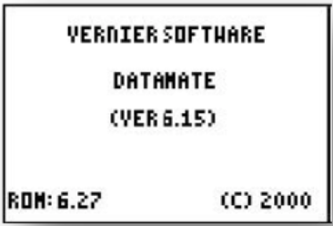
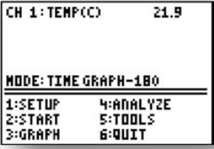

Thermodynamics and Gas Laws#
Introduction#
Thermodynamics#
Almost all chemical reactions either absorb or release heat. These experiments are designed to introduce you to three concepts of thermodynamics:
The measurement of heat energy
In a closed system, the heat gained by one object must equal the heat lost by another.
Energy is liberated or absorbed (as heat) during physical and chemical changes.
Heat and temperature are not the same. When heat is added to a substance, the temperature rises, but the amount of temperature rise depends on the type and quantity of substance. Temperature depends on heat, but is not directly or simply a measure of the amount of heat. You feel that something is hot or cold, because either it transfers heat to you or you to it.
Temperature is a measure (in degrees) of the average rate of motion of molecules in a substance. Heat energy is often measured in calories. The calorie is the amount of heat required to raise the temperature of exactly 1 gram of water from 14.5°C to 15.5°C. For all practical purposes, the calorie is simply defined as the amount of heat required to raise the temperature of 1g of water 1°C.
The amount of heat required to raise 1 g of a substance 1°C in temperature is called the specific heat of the substance. Specific heat is a characteristic property, just like density or boiling point.
Example of heat loss and gain with combustion
The combustion of natural gas in a water heater, furnace, or modern power plant is a common heat-producing (exothermic) reaction. Natural gas is mostly methane, \(\ce{CH4}\). The combustion of methane results in the following reaction:
According to the reaction, 212.8 kcal (or 212,800 calories) of heat (q) are produced by the oxidation of 16 grams (one gram-molecular weight, or one mole) of methane (natural gas).
Example of heat loss and gain in cells
Not all oxidation reactions proceed rapidly and vigorously by combustion. In living organisms, oxidation reactions proceed much more slowly and are controlled by enzymes. Some of the energy liberated by these reactions is used to raise the body temperature in warm- blooded animals, and some of it is used for other vital processes, such as muscle contraction, transmission of nerve impulses, and synthesis of essential compounds. For example, when glucose (a type of sugar) is used in metabolism, the following oxidation reaction occurs:
We often refer to the number of calories in a given portion of food. Accordingly, we would say there are 688 kcal of energy, q, in 180 g (one mole) of glucose; meaning that when this amount of glucose is oxidized in metabolism, there are 688 kcal of energy liberated. The minimum daily requirement for an adult human is between 1800 to 3000 kcal depending on the individual’s size and activity level.
If our diet provides more energy than our bodies can use, the surplus may be stored as lipids (fats), resulting in excess body weight. Approximately 3500 kcal equals one pound of body weight. If our diet does not provide us with enough energy, we must either use some stored fat or suffer a lack of energy.
Gas Laws#
Of the three states of matter (solid, liquid, and gas) gases are the most affected by the surrounding environment. Most solids undergo very little or no variation in shape and volume due to changes in temperature, pressure, or the type of container, etc. Although liquids assume the shape of their container, they tend to maintain a constant volume. While thermal expansion / contraction is noticeable in the case of both solids and liquids, it is relatively insignificant. External pressures do not affect matter in either of these states appreciably. However, a given amount of gas placed in an empty (evacuated) container of any shape will immediately expand to fill the container completely and uniformly. If pressure is exerted on a sealed, flexible container filled with gas, the gas will become compressed until the pressure exerted by the gas on the walls of its container equals the outside pressure applied. If the gas is heated, it will either apply more pressure on its container or expand to a greater volume.
Boyle’s gas law. Robert Boyle, a British chemist, was one of the first scientists to study gases quantitatively. In one set of experiments, Boyle established a relationship between the pressure and volume of a gas at constant temperature. In order to arrive at a physically significant law, Boyle simplified the problem by doing his experiments under controlled conditions. He kept the mass m of gas constant (i.e., no leaks in the container), and he kept the temperature constant. Under such circumstances, the relationship between pressure and volume is known as Boyle’s Law. At a constant temperature, the volume (V) occupied by a finite mass of gas is inversely proportional to the applied pressure (P). Mathematically, this relationship can be stated as follows:
Where the \(\propto\) symbol represents proportionality. Another way of stating Boyle’s Law is: for a given amount of gas at a constant temperature, the product of the pressure and the volume is a constant. Thus, by replacing the proportionality constant in the previous equation with a constant k, we will have another form of Boyle’s Law.
When using two sets of pressure/volume conditions (1 and 2), Boyle’s Law can be expressed:
where the subscript 1 refers to the initial state and the subscript 2 refers to the final state. In the Boyle’s Law experiment, you will examine the relationship between pressure and volume for a gas. Graphing this relationship for an ideal gas, shown in Fig. 1, results in a hyperbola. As we increase the pressure, passing from state 1 to state 2, the product PV is constant.
Effect of mass. The value of the constant, k, in Boyle’s Law depends on several factors. First, imagine that the quantity of gas changes while the temperature and volume remain constant. Pressure is caused by the impact of molecules as they strike the walls of the container. Therefore, doubling the mass (i.e., doubling the number of gas molecules) at a constant temperature will cause the number of impacts per second to double, and the pressure will be doubled.
Experimental verification shows that the product PV is proportional to the mass of gas.
In other words, if m is increased, then so is PV; and PV/m remains the same.
In general, when dealing with different kinds of gases, such as hydrogen and oxygen, it is important to use equal number of molecules rather than equal masses. For instance, there are actually more molecules in 8 g of \(\ce{H2}\) (whose molecular weight is 2.0) than in 80 g of \(\ce{O2}\) (whose molecular weight is 32). For \(\ce{H2}\), 8 g × 1 mol / 2 g = 4 moles; therefore, it has 4 × 6.02 × 1023 molecules. Similarly, 80 g of \(\ce{O2}\) is only 80/32 = 2.5 moles, and contains only 2.5 × 6.02 × 1023 molecules. All things being equal, we expect that the pressure exerted by hydrogen would be greater by a ratio of 4 to 2.5. Thus, the following equation applies:
where n is the number of moles of gas present.
Charles’s Law. Around 1800, French scientist and balloonist Jacques Charles began studying the effect of increasing temperature on gases. He observed that the rate of thermal expansion is constant and is the same for all gases as long as the pressure is constant. Charles examined the effects of temperature upon the pressure exerted by a confined gas with volume and mass remaining constant. Fig. 2 shows that the pressure increases uniformly as the temperature increases. Thus, the graph of pressure vs. temperature is a straight line.
In 1848, Lord Kelvin, a British physicist, noted that by extending different temperature/volume lines (for gases at various but constant pressures) back to zero volume, he always found the same intercept. The intercept on the temperature axis is -273.15°C. Kelvin named this temperature absolute zero. The Kelvin absolute temperature scale, in which K = °C + 273.15, is named in his honor. The volume/temperature relationship for gases using the absolute temperature scale is known as Charles’s Law. At a constant pressure, the volume of a finite amount (mass) of gas is directly proportional to the temperature of the gas. Mathematically, Charles’ Law can be stated as follows (using the absolute temperature scale).
This relationship leads to:
Note that in the graph of P vs T is as a dashed line below a certain temperature. This is to indicate that the pressure would become zero at some temperature if it continued to decrease at the same rate as it does near room temperature. Any ideal gas is assumed to behave this way; but in actual practice, before the gas pressure becomes zero, the gas will liquefy at some temperature and then, of course, it will no longer even be a gas. As the temperature of the gas decreases, the pressure deviates somewhat from the straight-line relationship. We expect such a behavior on the basis of what we know about molecules. The slower-moving molecules are more affected by mutual cohesive forces, and the pressure exerted by them will drop off a little. Finally, when the temperature is low enough and the molecules slow enough, the cohesive forces causes the molecules to stick together as a liquid. The mathematical equation of the dashed line in the graph of P vs T can be written as:
In which the temperature, T, is expressed in ºC, P(T) is the pressure at temperature T, P(0) is the pressure at 0ºC, and b is a scaling constant. Using the assumption that gases are nearly ideal, we can rework this equation into a form that makes calculations very simple. Using the numerical value of 0.00366 /°C for b, and recognizing that at the lowest achievable temperature, \(T_{min}\), is when \(P(T_{min}) = 0\):
Experimental data shows that the constant b is practically the same for all gases and is about 0.00366 /°C. for those gases, such as hydrogen, which are nearly “ideal.” The pressure coefficients for helium and oxygen are 0.00367 /°C. Such differences are minor and show that no gas is totally ideal.
Thus it can be seen that the temperature at which the pressure would become zero is the same for all ideal gases if the gas remained an ideal gas all the way down to zero pressure. Again, we call this temperature absolute zero. In the laboratory, we can measure the pressure of a gas at different temperatures and extrapolate the graph down to zero pressure, as we did in the P vs T graph. Precise experiments have given -273.15°C as the value of this important constant, but we can usually round the value to -273°C.
In the Charles’ Law experiment you will examine the effect of temperature on the volume of a gas. You will also extrapolate the temperature/volume relationship to obtain a temperature value for absolute zero.
Ideal gas equation. From Charles’ Law, we know that volume varies proportionally with absolute temperature. From Boyle’s Law, we know that volume varies with an inverse proportionality with pressure. Combining the two laws, we obtain:
In which the constant, k’, depends only on the number of moles of gas, n, present. We can remove the dependence on the number of moles, n, to achieve a true constant, R, that is independent of all other variables–pressure, temperature, volume and number of moles of gas.
Combining all of the above, we achieve the ideal gas equation.
The ideal gas constant, R, can be expressed in a variety of units, and the following table lists a few.
Gas Constant, R |
|---|
0.083145 \(L \cdot bar \cdot mol^{-1} \cdot K^{-1}\) |
0.082057 \(L \cdot atm \cdot mol^{-1} \cdot K^{-1}\) |
8.3145 \(J \cdot mol^{-1} \cdot K^{-1}\) |
Dalton’s law of partial pressure. As we have already discussed, gases exert pressure on their enclosures. Mixtures of gases exert pressure on their enclosures as well, but each component of the gas mixture is responsible for only a fraction of the total exertion. John Dalton was the first scientist to form a hypothesis about how much each component of a mixture of gases contributes to the overall pressure exerted. We call the pressure exerted by a single type of gas a partial pressure. Dalton’s hypothesis states that the total pressure in a container is the sum of the partial pressures of the gases in the container.
The contribution by a single gas to the overall pressure exerted on a container depends largely on the amount of gas present. For equal volumes of gases in a container, there are different numbers of molecules present for each gas. Since each gas is at the same temperature in a mixture, the pressure due to a single gas is due to the number of molecules of the gas in relation to the overall number of molecules.
Significance of atmospheric pressure
The average pressure exerted by the atmosphere is approximately 14.7 pounds per square inch at sea level (also known as 1 atmosphere). This means that a column of air of one inch square extending from sea level to the top of the atmosphere would weigh about 14.7 pounds. The actual pressure at a given place and time, however, depends upon several factors, including altitude, temperature, and the density of the air.
Measurement of atmospheric pressure
A barometer generally consists of a column of mercury in a glass tube. It is sealed at one end and calibrated in inches of mercury. An increase in pressure forces the mercury higher in the tube; a decrease allows some of the mercury to drain out, reducing the height of the column. In this way, changes of pressure are registered in inches of mercury. The standard sea-level pressure expressed in these terms is 29.92 inches at a standard temperature of 15°C (59°F).
If all weather stations were at sea level, the barometer readings would give a correct record of the distribution of atmospheric pressure at a common level. To achieve a common level, each station translates its barometer reading in terms of sea level pressure. A change of 1,000 feet of elevation makes a change of about one inch on the barometer reading. Thus, if a station located 5,000 feet above sea level found the mercury to be 25 inches high in the barometer tube, it would translate and report this reading as 30 inches. Because the rate of decrease in the atmospheric pressure is fairly constant in the lower layers of the atmosphere, the approximate altitude can be determined by finding the difference between pressure at sea level and the pressure at the given atmospheric level. In fact, the aircraft altimeter is an aneroid barometer with its scale in unites of altitude instead of pressure.
Effects of Altitude on Atmospheric Pressure
We can conclude that atmospheric pressure decreases as altitude increases and that the pressure at a given point is a measure of the weight of the column of air above that point. As altitude increases, pressure decreases along with the weight of the air column. This decrease in pressure has a pronounced effect on aircraft takeoffs, rates of climb, and landings. An airplane that requires a 1,000 foot runway for takeoff at a sea level airport will require a runway almost twice as long to takeoff at an airport 5,000 feet above sea level. The purpose of the takeoff run is to gain enough speed to generate lift from the passage of air over the wings. When the air is less dense, more speed is required to obtain enough lift for takeoff; hence, a longer ground run is necessary. It is also true that the engine is less efficient in thin air, and the thrust of the propeller is less effective. Generally, atmospheric pressure drops by half every 5 km increase in altitude.
Differences in air density
Differences in air density caused by temperature changes result in pressure changes. This, in turn, creates motion in the atmosphere, both vertically and horizontally (currents and winds). This action, when mixed with moisture, produces clouds and precipitation. In fact, these are all the phenomena called weather. In general, a marked fall of the barometer indicates the approach of bad weather and marked rise indicates the clearing of the weather.
The cause of atmospheric circulation
Pressure and temperature changes produce two kinds of motion in the atmosphere: vertical movement of ascending and descending currents, and horizontal flow called wind. The atmosphere tries to maintain an equal pressure over the entire earth, just as the ocean tends to maintain a constant level. When the equilibrium is disturbed, air begins to flow from areas of higher pressure to areas of lower pressure. The factor that upsets the normal equilibrium is the uneven heating of the earth by the sun.
Objectives#
Define the concepts of specific heat
Compare changes in energy for chemical and physical processes
Perform heat-gain and heat-loss calculations
Explore real-world examples of heat-gain and heat-loss
Define the effects of temperature, pressure and volume of gases
Determine the effect of temperature and pressure on the volume of a gas
Graphically deduce Boyle’s law and Charles’s law
Apply the gas laws to real-world examples
Set up#
Thermistor calibration#
This tutorial explains how to do temperature measurements using the DataMate program in Time Graph mode on a TI graphing calculator connected to a LabPro interface with a temperature probe. The LabPro interface reads signals from a variety of sensors and transmits those signals electrically to a calculator or computer.
Sensors can be divided into two basic types—analog and digital. Examples of analog sensors are temperature probes, pH sensors, force sensors, oxygen gas sensors, etc. Up to four analog sensors can be connected to LabPro. Four jacks for the analog sensors (CH 1 – CH 4) are located on the same side as the AC adapter port. The analog ports accept British Telecom-style plugs with a right-hand connector. Examples of digital sensors are motion detectors, radiation monitors, photogates, and rotary motion sensors. Up to two digital sensors can be connected to LabPro. The digital ports (DIG/SONIC), which accept British Telecom-style plugs with a left-hand connector, are located on the same side as the serial and USB computer connections.
Fig. 1 Diagram of the compoments for the Vernier LabPro [Vernier].#
1. Plug the link cable into the link port of the TI graphing calculator and LabPro
You will collect data on TI graphing calculator and use LabPro only as an interface (I/O port).
2. Plug the stainless-steel temperature probe into Channel 1
Connect the sensor to the appropriate port (Channel 1 for temperature probe). An important feature of LabPro is its ability to detect auto-ID sensors, and automatically set up an experiment.
Note
Remember that the temperature probe does not need calibration, so skip any instructions asking you to calibrate the sensor!
3. Provide power to LabPro (AC adapter)
To use LabPro with the AC power supply, plug the round plug on the 6-volt power supply into the side of the interface. Shortly after plugging the power supply into the outlet, the interface will run through a self-test. You will hear a series of beeps and blinking lights (red, yellow, then green) indicating a successful power up. If the self-test is not successful, unplug everything and plug it in again. You cannot proceed until you hear the beeps!
4. Start the DataMate program on TI-84 Plus graphing calculator
Turn the calculator ON
Press APPS (Applications)
Press number under DataMate program
This temporary screen will appear:
After the program begins, the calculator will try to communicate with the interface and check for auto-ID sensors. If this communication is successful, the main screen (shown below) will appear.
In this example a temperature probe was connected and DataMate automatically identified and displayed the channel it was connected to, giving the current temperature reading. DataMate also sets up a default time graph experiment for auto-ID sensors. In this example, an experiment was set up to collect data for 180 seconds.
Change the time settings, if needed:
Press 1 (for Setup in Main Menu)
Select Mode and press Enter
In Select Mode menu press number 2 (Time graph)
Select Options and then Change time settings
Pick time interval between the points and total time of the experiment (should be the same for all three experiments!)
You are now ready to collect data
{kind=link}
{kind=link}
5. Collect data with DataMate on a TI graphing calculator
Use the following steps to collect data on the DataMate program. Note that the TI calculator can only hold a maximum of three sets of data from a single auto-ID sensor such as a temperature or pressure probe:
Press 2 (for Start in Main Menu)
When experiment is done (graph will automatically appear) press Enter (to go back to Main Menu). If you want to stop experiment run earlier click STO>
Press 5 (for Tools in Main Menu)
Press Store Last Run
Repeat it for the second set of data
At the end of the third set of the data there is no need for Store Last Run step, instead press 6 (for Quit in Main Menu) (last measurement will be stored automatically)
6. Transmit data to computer
Use the following steps to retrieve data from the TI calculator by the computer:
All computers have Logger Pro 3.3 software on them
Connect the calculator and the computer I/O (calculator) - USB (computer) silver graphing cable
Start Logger Pro 3.3 program by double-clicking on the icon
Click on the little calculator icon in the top line on the program menu (Import from TI device should appear when you put mouse on little calculator icon)
Pick the TI-GRAPH LINKTM-USB from the Port pull down menu. Skip the following step if TI- GRAPH LINKTM-USB is already present.
Click on Scan for device
From Choose data to import, highlight L1 (time) and L2, L3, and L4 lines (Temperature) by holding Ctrl button
Click OK
You can make:
Single graph (for example only L2 vs. L1)
All three measurements appear on the screen at the same time by clicking on the temperature axes (y-axes), choose option More and then check the three columns to be displayed (L2, L3, L4)
Click OK
To save graph in format that you can later use with Excel, Origin, or MATLAB go to:
File
Export as
Text
Save that text file (*.txt) on your flash drive
Click No for “Do you want to save changes you made to Untitled.cmbl”
Repeat another set of three measurements if needed.
With Excel
Open the Excel program
Under the File pick Open, mark the text file, click OK
Importing text file: click Finished
Experiments#
Experiment 1. Enthalpy of Reaction#
In this experiment, you will determine the heat of combustion for candle wax. This combustion results in a chemical change. During the experiment, some wax will melt as well as combust. To avoid losing the mass of wax drops, it is a good idea to weigh the candle with a paper towel. Put the paper towel under the candle while it is burning to catch any drips. At the end of the experiment, weigh the candle and the towel. In this way, you account for the mass of any unburned wax that has dripped from the candle.
Materials#
Styrofoam cup or plastic mug |
ring stand |
candle |
ice |
thermistor or thermometer |
metal cup |
clay triangle |
bunsen burner or hotplate |
Procedure#
1. Set up a ring stand with a clay triangle to hold the metal can
The can will serve as a water container. Heat transfer from the flame to the can is facilitated by the use of a clay triangle, as opposed to a wire mesh.
2. Add and weight water to container
Clean as much carbon off the metal can as possible
Place ~100 mL of cold water in the can and determine the mass of the empty container and the container with water.
Enter these values and future values on the
datasheet for this experiment.
3. Use a balance to accurately determine the mass of the candle
If you choose to use a paper towel, include its mass in the measurement.
4. Position the candle with the wick about 1 inch below the cup, using a clamp.
5. Prepare the thermistor
Calibrate the thermistor if it has not been calibrated already.
Start your program for measuring temperature, or, start a pre-written program–THERM2, for instance.
6. Measure the temperature and light the candle
Stir the water and record the initial temperature.
Light the candle to initiate the chemical reaction.
Stir the water gently with the thermistor until about a 20°C temperature rise is noted.
7. Measure the temperature and extinguish the candle
Record the final water temperature and extinguish the candle.
Allow the molten wax to solidify so that drops are not lost when removing the candle from its holder.
8. Find the final mass of the candle
Record the final mass of the candle to determine how much of the candle burned.
You may also need to remove any wax drippings from the candle holder and include them when measuring the mass.
Results and Analysis#
On your datasheet, calculate and
note the following:
1. Calculate the heat absorbed by the water
The specific heat of water, Cp, is 1.00 cal/g/°C. The equation which allows you to calculate the amount of heat, \(q_{water}\), absorbed by a mass of water, \(m_{water}\), is:
The heat absorbed depends on the temperature change of the water, \(\Delta T\).
2. Estimate the enthalpy of wax
The heat absorbed by the water, \(q_{water}\), is less than or equal to the heat released by the chemical reaction, \(q_P\), at constant pressure.
Likewise the enthalpy, H, of combustion per gram of wax, \(m_{wax}\), can be estimated. Calculate the estimated enthalpy of the wax.
Experiment 2. Colligative properties#
In this experiment, you will measure the impact of colligative properties on the boiling point of water. You will boil pure water, the control, a solution with salt NaCl and a solution with sucrose. Each of these will have a different boiling point, which we will use to calculate the enthalpy of water vaporization.
Materials#
3 x 50-mL Erlenmeyer flasks |
1 hotplate |
forcep or tongs |
thermal gloves |
thermometer or thermistor |
Procedure#
1. Label and weigh 3 x 50-ml Erlenmeyer flasks
Label the Erlenmeyer flasks with ‘ddH2O’, ‘ddH2O+NaCl’ and ‘ddH2O+PG– either directly or with labels. Make sure to remove or clean the labels after you’re done with the experiment.
Measure the mass for each of the 3 Erlenmeyer flasks and note these in the
datasheet.
2. Weigh about 25-ml of distilled water (ddH2O) in each flask
Using a squirt bottle with ddH2O, add about 25-ml (25g) of water to each Erlenmeyer flask. Record the mass in the datasheet.
3. Weight the additives
In the Erlenmeyer flask labeled ‘ddH2O+NaCl’, add about 7.0g of NaCl. Record the mass in the datasheet.
In the Erlenmeyer flask labeled ‘ddH2O+PG’, add about 7.0g of propylene glycol (PG). Record the mass in the datasheet.
4. Place the 3 Erlenmeyers on a hot plate.
5. Slowly heat the 3 solutions
Increase the heater on the hotplate. Do not place it at or near the maximum setting. Start with a small amount of heating, e.g. 10%, and increase as needed to get the solutions to a boil.
Danger
The hot plate and the 3 solutions will get hot and could cause burns! Do not touch the solutions, flasks or hot plates while the hot plate is turned on. Remove the flasks with forceps.
6. Measure the boiling temperature
Once the 3 solutions reach a rolling boil, use the thermistor or thermometer to measure and record the boiling point to within 0.1ºC. Use thermal gloves and avoid touching the hot water vapor.
7. Cleanup
Shutoff the heat on the hot plate and unplug it. Allow the hotplate and the solutions time to cool to room temperature.
Return the cooled hotplate, wash the Erlenmeyer flasks and return them to their storage place.
Results and Analysis#
On your datasheet, calculate and
note the following:
1. Calculate the molality of the solutions
The molality, m, is calculated from the number of moles of solute, \(n_{solute}\), divided by mass of solvent in kg, \(m_{solvent}\).
2. Calculate the enthalpy of vaporization of water.
The increase in boiling point temperature, \(\Delta T_b\), can be related to the ebullioscopic constant, K, and the molality of the solution, m.
The ebullioscopic constant is different for each solvent, and it depends on the gas constant, R, the boiling point of the solvent, \(T_b\), the molar mass of the solvent, \(M_{solvent}\), and the enthalpy of vaporization, \(\Delta H_v\).
For the two solutions, use the change in boiling point temperature, \(\Delta T_b\), and the molality to calculate the ebullioscopic constant, K, for water. Average the two values. Thereafter, use this averaged value, K, to calculate the enthalpy of vaporization for water, \(\Delta H_v\).
Tip
\(\Delta T_b\) and \(T_b\) are not the same.
Experiment 3. Charles’s Law#
In this experiment, you will explore the effect of temperature on a gas, which remains at constant pressure.
Materials#
400-mL beaker |
large (1000-mL) beaker |
125-mL Erlenmeyer flask w rubber stopper |
100-mL graduated cylinder |
crucible tongs |
Bunsen burner or hotplate |
thermometer or thermistor |
Procedure#
1. Add 200-mL to the 400-mL beaker
2. Heat the water to a boil
While the water is heating, place ice and water in a separate large beaker. The water level should be within 3cm of the large beaker’s rim.
Danger
Hot water and water vapor can cause burns. Be careful to not touch hot surfaces or to not tip the beaker with boiling hot water.
3. Prepare the 125-mL Erlenmeyer
Thoroughly dry the 125-mL Erlenmeyer and place the rubber stopper on the flask.
The rubber stopper should have a small hole in it to allow the passage of gases and liquids.
4. With the tongs, immerse the flask in the boiling water.
Submerge the flask up to its neck, and do no allow water to enter the flask.
Hold the flask in the water for at least 6 minutes to achieve thermal equilibrium. The objective is to heat the air in the flask to match the temperature of the boiling water.
5. Record the temperature of the boiling water (\(T_{hot}\))
Write the temperature and the other following measurements on the
datasheet.
6. Quickly submerge the inverted flask in the cold water bath
With the tongs, place the Erlenmeyer flask and upside down in the cold water bath.
The objective is to submerge the flask as much as possible and to allow water to flow in through the hole in the stopper until the gas in the flask has reached equilibrium with the temperature and pressure of the water.
Allow the flask to cool and reach equilibrium–at least 6 minutes.
7. Position the flask’s water level and cap the stopper
Lift the flask so that the water level inside the flask is at the same height as the water outside of the flask, in the cold water beaker. We are equilibrating the pressure in side the flask to match the atmospheric pressure.
Place your finger on the hole in the stopper, pull out the flask, and turn it upright.
Tip
If the flask is hot to the touch, you haven’t given it enough time to reach thermal equilibrium–i.e. it’s not as cold as the ice water in the bath.
8. Record the temperature of the ice water (\(T_{cold}\))
9. Measure the volume of water from inside the Erlenmeyer flask
Use the 100-mL graduated cylinder to measure the volume of water, or the amount of water can be measured gravimetrically.
10. Measure the volume of the full Erlenmeyer flask
Fill the Erlenmeyer flask to the level just below the stopper. The objective is to find the volume of gas in the Erlenmeyer before you submerged it in the boiling water earlier.
Use the 100-mL graduated cylinder to measure the volume of water, or the amount of water can be measured gravimetrically.
11. Clean-up
Shut off the burners or hotplate. Once all items have reached room temperature, return all items to the storage locations and wipe any spills.
Results and Analysis#
On your datasheet, calculate and
note the following:
1. Calculate the volume-to-temperature ratio of the hot gas
Divide the volume of the full Erlenmeyer flask by the hot temperature in Kelvin.
As the Erlenmeyer was heated, air escaped the flask through the hole to match the atmospheric pressure. Once a thermal equilibrium was reached, the full volume of the Erlenmeyer was occupied by air, and this presents the volume of the hot gas.
2. Calculate the volume-to-temperature ratio of the cold gas
The volume of the cold gas is the volume of the full flask minus the volume of water than entered the flask when it was cooled.
Discussion and Questions#
Experiment 1#
The heat of the reaction, \(q_P\) is greater or equal to the heat absorbed by the water, \(q_{water}\). Why are these two values different?
How would experiment #1 be different if the process was adiabatic?
Experiment 2#
For the colligative properties of solutes, what kind of solute would generate the largest boiling point shift, \(\Delta T_b\), for the least mass of solute, \(m_{solute}\)?
Experiment 3#
What is the relationship between the hot volume-to-temperature ratio and the cold volume-to-temperature ratio?
References#
Vernier LabPro User’s Manual, Vernier Software & Technology, Beaverton, Oregon. 2013. url: http://www2.vernier.com/labpro/labpro_user_manual.pdf
Contributors#
Audrey Dell Hammerich |
Luke Hanley |
Yoshitaka Ishii |
Justin Lorieau |
Preston Snee |
Ben Stokes |
Sanja Tepavcevic |